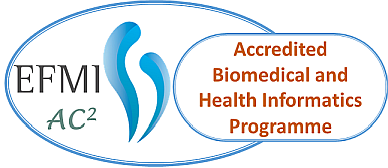
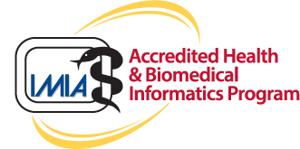

Programmes
Accredited programmes
Programmes and courses that passed an international quality review by EFMI or IMIA.
EFMI and IMIA accredited programmes
Programmes that hold, or have held, an accreditation by EFMI or IMIA. EFMI accreditation is granted by the EFMI Accreditation and Certification Committee (AC2) after a self-assessment and a site visit, for three years, then a re-accreditation is needed.
Accredited programmes may display the EFMI AC2 mark or the IMIA accreditation mark below. The list is ordered by the year of the latest accreditation, most recent first.


| Programme | Type | Institution | Country | Accredited by | Accreditation |
|---|---|---|---|---|---|
| MSc Digital Transformation for the Health and Care Professions (part-time, distance learning) | Master | University of Wales Trinity Saint David (UWTSD) | United Kingdom | EFMI | First accredited 2023; re-accredited 2026–2031 (5 years), announced at MIE 2026 |
| Master in Medical Informatics (MIM), now Master in Health Informatics (MIS) | Master | Faculty of Medicine, University of Porto (FMUP) | Portugal | EFMI | 2022–2025 (3 years) · TO VALIDATE: re-accreditation after 2025 |
| Master's programme in Medical Informatics | Master | UMIT TIROL – Private University for Health Sciences and Health Technology | Austria | EFMI | 2020 – first programme accredited by EFMI · TO VALIDATE: current status |
| Master's Programme in Health and Social Care Information Management (Sosiaali- ja terveydenhuollon tiedonhallinnan maisteriohjelma) | Master | University of Eastern Finland (UEF), Kuopio | Finland | IMIA | 2012 and 2018 · TO VALIDATE: current accreditation |
| Study track “Medical Informatics – Health Information Officer” (B.Sc. and M.Sc.); continued as Applied Computer Science, Professionalization in Medical Informatics | BachelorMaster | Georg-August-Universität Göttingen, with the Department of Medical Informatics, University Medical Center Göttingen (UMG) | Germany | IMIA | 2013 and 2017 · TO VALIDATE: current status |
| INSAFEDARE training course on assuring real-world and synthetic data for regulatory decision support · TO VALIDATE: course title and link | Training course | INSAFEDARE consortium (Horizon Europe project 101095661) | Europe | TO VALIDATE: EFMI or IMIA | Accredited · TO VALIDATE: period |
No accredited programme of this type yet.
This list is built from public sources and may be incomplete. TO VALIDATE: full list of EFMI and IMIA accredited programmes from AC2 Is your programme accredited? Tell us.